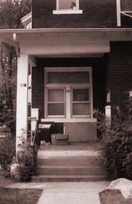

__home __news __what __who __what.was __what.will.be __21/22 corp __(23) __ele_ment __think
| B R E A K I N . I T . D O W N (for my cru) why i fired myself as head of the ele_mental project edward luna - on behalf of himself "NO MORE RAVES!!" that's basically what i said back in early august, in a net-wide announcement and on our "what.will.be" page. as a result, a lot of people thought ele_mental was quitting, ending, being dismantled, etc... | |
|  286 e. 13th ave. |
this was never true. my "announcement" did mark a transition in ele_history, a move away from rave promotion and towards something more fluid and all-encompassing. the announcement also marked the end of my "reign" over the ele_mental project, having sustained it nearly single-handedly over the last 3+ years. it also documented the loss of several of our good friends, including kevin kennedy (now living in north carolina), kevin ginger (recently moved to portland, oregon), and mira abellera (our first and only female coreperson, also moved to portland). no matter where they go, we know they will all carry ele_mental with them. saddest of all, after 4 years of serving as both a meeting place and a resource center, the famous 286 e. 13th ave. house was abandoned, and with it, the 299.9529 phone number--which was in the family for 6 years. but i also said that "ele_mental is far from over," and that we would continue to try to reach "a new, more diverse kind of audience" such as "electronic music lovers, punks, cyber geeks, artists, experimental performers, new explorers, those disgruntled with the rave scene, and of course, open-minded ravers." we would return to our funda_mentals, carrying on "in different ways, in different areas. . .in the spirit of our first few events in 1993." if you're reading this now, you are among the people we want to reach, helping us to build new kinds of electronic dance music experiences which exist somewhere between rave, gallery opening, concert, art installation, house party, and interactive "happening." if you're interested in becoming part of this effort, keep reading. so ele_mental is not over. these webpages will stay up, and continue to grow. the table of ele_ments voicemail will continue to be updated. MENTAL will continue to happen at the sugar shack every monday. and we will continue to do events, of various shapes and sizes. WHY I FIRED MYSELF for over 3 years now, i have almost singlehandedly set the tone of the ele_mental ideal: conceiving and executing over 30 events primarily by myself, actively maintaining the table of ele_ments voicemail, designing and maintaining the entire ele_mental website, and spreading the message through my continued net-presence on rave lists such as 313, mwraves, and pb-cle. so the painful fact about ele_mental is that had (and still has) "ed" written all over it. but that's not how it was meant to be. ele_mental was always meant to be more of a collective idea, a looser, more fluid concept. because i had the time, and because i actively sought to build something like ele_mental, i took it and ran with it. in the process, i often made it hard for people to contribute on the foundation level. if they did contribute, it was usually only after i had already put a structure into place. but no one wants to claim ownership for a structure when all they've done is add a few decorative flourishes at the end. everyone would prefer to get in on the ground floor, and have a say in how things work. yet i still continued, from mid 1995 until june of 1998, to build this thing mostly by myself. i don't mean to diminish the contributions of my crew. even when ele_mental was only a vehicle for my own views and ideas, i still depended on the logistical support of people from inside and outside the circle: kevin ginger, charles noel, tony ramos, titonton duvante, kevin kennedy, mira abellera, dara bosiljevic, bannoy (the bouncer), gary xaoui, mark gunderson, and many, many others. these were the people who let me borrow money, allowed me to use their equipment, worked the door for me, played for free, helped set up and break down, passed out flyers, and so on. these people allowed me to use their resources to promote my visions and ideals. many times, they shared in these visions and ideals. with their help, i promoted ele_mental as something bigger than myself, intrinsically tied to our own local underground electronic music scene, and strongly connected to even wider concepts such as minimalism, futurism, and underground expression. the events i coordinated encouraged a deeper awareness of electronic music (and music-making); its history, its connection to art and technology (among other things), its complexity, and its simplicity. all of this was done without regard to money-making. and in case i thought none of this had made an impact, the reverberations have continued to bounce back to me in surprising ways (being told that i "set the tone" for the columbus scene? walking into speed records in toronto and seeing ele_mental posters and pictures all over the wall? receiving emails from out of the blue: somebody read "think," or heard one of us play, or discovered the webpage? having complete strangers come up to me at a party and express their deep understanding of what we stand for? it's still an amazing feeling...). but by the spring of 1998, i realized something would have to change. the message was getting swallowed up in a sea of candy. my low-key, cheap, and experimentally-inclined events could simply not compete against the loudly-promoted, $20 blowout raves. in fact, ravers began to expect a blowout every time; anything less was just not a "rave." not that i've ever tried hard to compete, but up until this year, there was still a little bit of slack which allowed me to slip some seriousness into the sugar. then, by late spring, the slack got too tight, and too many of my events simply went bust. it would be too easy for me to use this as an excuse to tear into the rave scene and point out its many problems (they should be obvious), or blame the scene for failing to reach towards what i offered. but i just can't do that, because that's not the real reason things needed to change with us. the rave scene is what it is, it's always had elements of light and dark, with lots of greys in between. so what? the real reason why i failed was because i was not a good promoter. i did not have the business sense, nor the punctuality or professional state of mind to get the job done right, and would always cobble things together at the near-last minute. edginess and chaos can be fun, but not as a way of life. but ultimately, i'm not sure how much of a difference it would have even made had i done things professionally and thoroughly. why? because my best efforts ("well-intentioned" as they may have been) were rotten to the core. the real reason my version of ele_mental failed was because i failed to let anyone _in_. even as i knew it was happening, i continued to forge ahead with "my" concepts, partially out of obligation to "the cause" and to the structures i had set in place (the snow parties, the ele_ments, the darkside parties, the active.not.passives, etc), and partially because i knew no one else really had the inclination to take up where i had left off. but over the last few months, and through actual dialogue with most of the principal ele_mentals, i came to realize that my conception of ele_mental had to end (it's amazing what a few face-to-face round-table meetings can do!). i had to burn down the house i built, and start anew. in short, i fired myself. "I WONDER WHAT THE FUTURE HOLDS..." so what does this mean for me? well, like george macunias, the leader of the fluxus art movement in the 1960s, i will still "speak" for ele_mental, and define it in whatever diverse terms i feel are appropriate--as long as i consult everyone, or just speak as _part_ of the group, not as _the_ group. i can keep the web pages, as long as i actively encourage others to create their own online areas. i can still do the voicemail, while remembering that other people may suggest different ways of doing it. these are things i'm good at, and enjoy doing, so why not continue doing them? but at the same time, i've got to re-invent myself and let people in on the ground floor, creating an atmosphere where others can step in and claim ele_mental as their own, contribute to it in whatever way they feel comfortable, use it as a resource, or simply attach themselves to it to become part of something meaningful. this very webpage is itself (i hope) the final stand of "ed_lemental"; my final act of self-destruction, in order to re-build. as far as events, i will continue to present MENTAL every monday night at the sugar shack cafe (1950 n. 4th st.), and i do expect to spearhead a few small electronic music events in the fall (including the ongoing ele_ment concert series and the ACTIVE.not.PASSIVE experimental event series), and will continue to collaborate with the FIREXIT crew who are definitely going in a smiliar direction with their gallery/punk/electronica openings. these events will still be "rave-related" to some degree, but they will no longer be geared specifically to the rave community. they will be on a small scale, possibly free, and combine the cerebral aspect of galleries and art shows, with the bodily aspects of parties; in the hope of bringing the best of both worlds together to create something new. ele_mental's roots in the rave experience can never be denied, and we will continue to reach in that direction whenever possible or practical. for example, i plan to continue luggung the ele_mental sound system out to various raves and other events, to create a small area for sonic experimentation. i plan to continue to promote myself as a DJ (lunar), playing my more immersive style of music to a wider rave audience. but the real hope, again, is to create a new kind of audience, by reaching out to new kinds of people, many of whom might not come from a rave (or even elecronic music) background. we will also undoubtedly reach out to the many people who are already ele_affiliated, asking them to join us in a more concrete way. we will also reach out to those of you who have left the rave scene (for many reasons), and see if together, we can build something that can speak to everyone. finally, if you have been paying attention from afar, and have wanted to contribute, but may not have known how...now would be a good time to reach out and make your presence known. as i said before (tho one one seemed to notice it ;), ele_mental is far from over. in fact, we've only begun. CONTACT INFO please write to our communal account at element@pico.concourse.com, which now automatically forwards your words to various members of the cru. or, call the table of ele_ments (614.470.0929) and leave us a message with your ideas or comments. A FINAL THANKS we thank all of you for taking part, on whatever level you were able to contribute; from within or without, near or far, skimming the surface or building the infrastructure. if you're new, we welcome you. either way, we need everyone's help... --eluna 7 september 1998 |